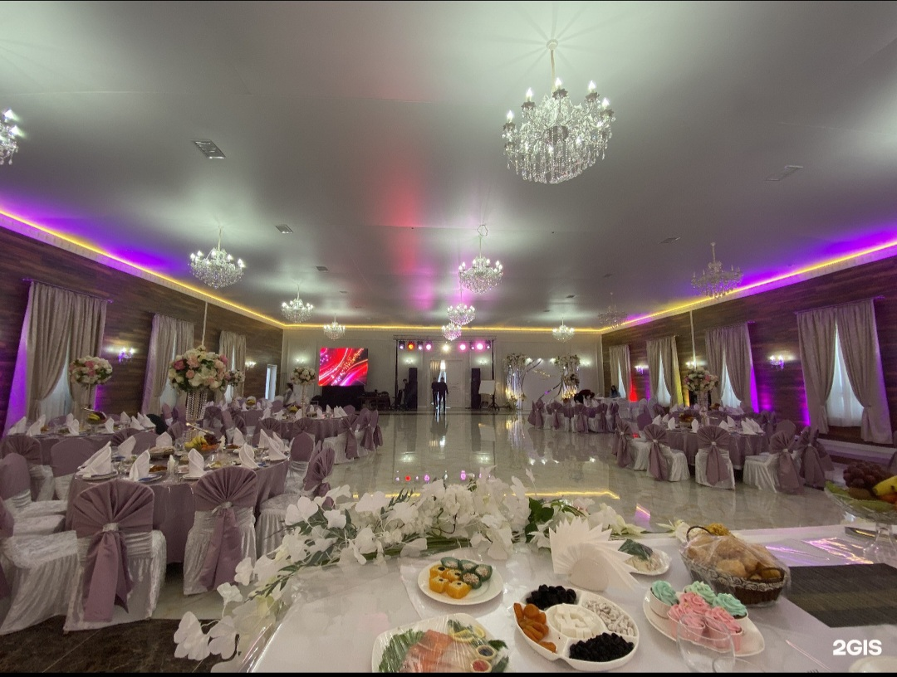
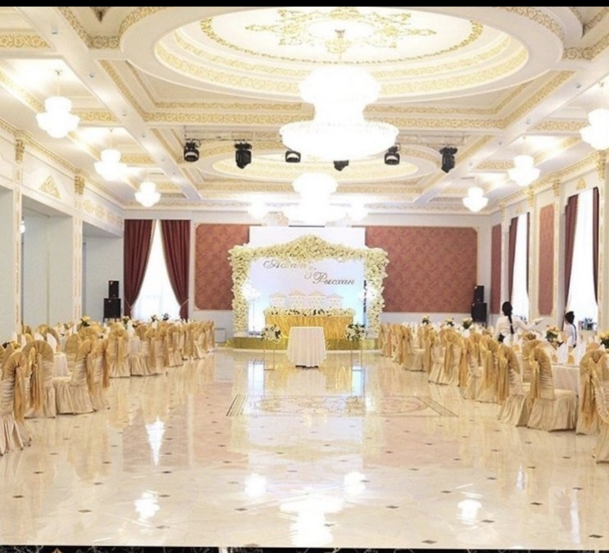

Nur Hall
✨Luxurious hall for any event
✨From 80 to 250 persons
✨Beautiful decoration of the hall
| Here you can enjoy exquisite dishes and a cozy atmosphere at Nur Hall. I worked here for four years, starting in the tenth grade during school. In this restaurant I was a waiter, a supervisor of waiters, a supervisor of a banquet hall, an administrator, and a supervisor of music apartment.
During my work, I gained a lot of experience in various fields of work.

Maryiam Hall
⚜️luxurious, modern, new hall for 350 people and a laconic design suitable for any event
⚜️individual approach to each guest new light and sound equipment
⚜️convenient large parking and national and European cuisine
| We will turn your holiday into a work of art and save your time and nerves!
| Maryiam Hall restaurant offers you a unique experience and a diverse menu for all your gastronomic desires.

Dudarai Hall
⚜️Luxurious hall for your celebration
⚜️Capacity from 60 to 300 people
⚜️Delicious cuisine
⚜️Best prices in the city
| We invite you to Dudarai Hall restaurant where you can enjoy excellent dishes and excellent service.

Iasy Hall
💃 Banquet hall for up to 500 people
🤲🏻Funeral dinners for up to 1000 people 🤲🏻
🏨Hotel
🎤Karaoke, VIP rooms
| Iasy Hall is a place where you will find the freshest ingredients and exquisite dishes in a cozy atmosphere.
